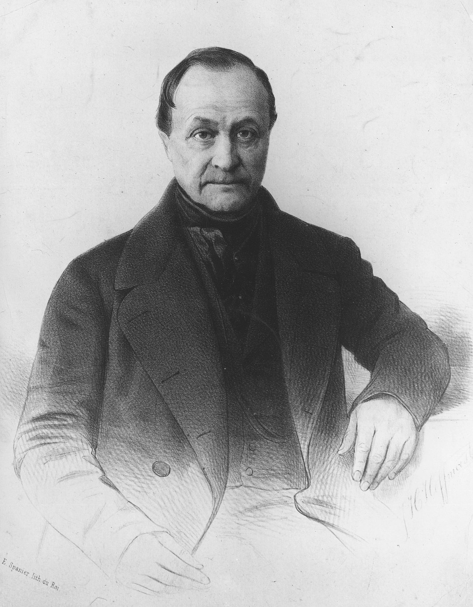

Weber y el constructivismo social .
Durkheim y el Hecho Social!
Marx y el materialismo historico

El stigma social- Erving Goffman
Foucault y la crisis de la modernida.

Comte y la ley de los 3 estados!